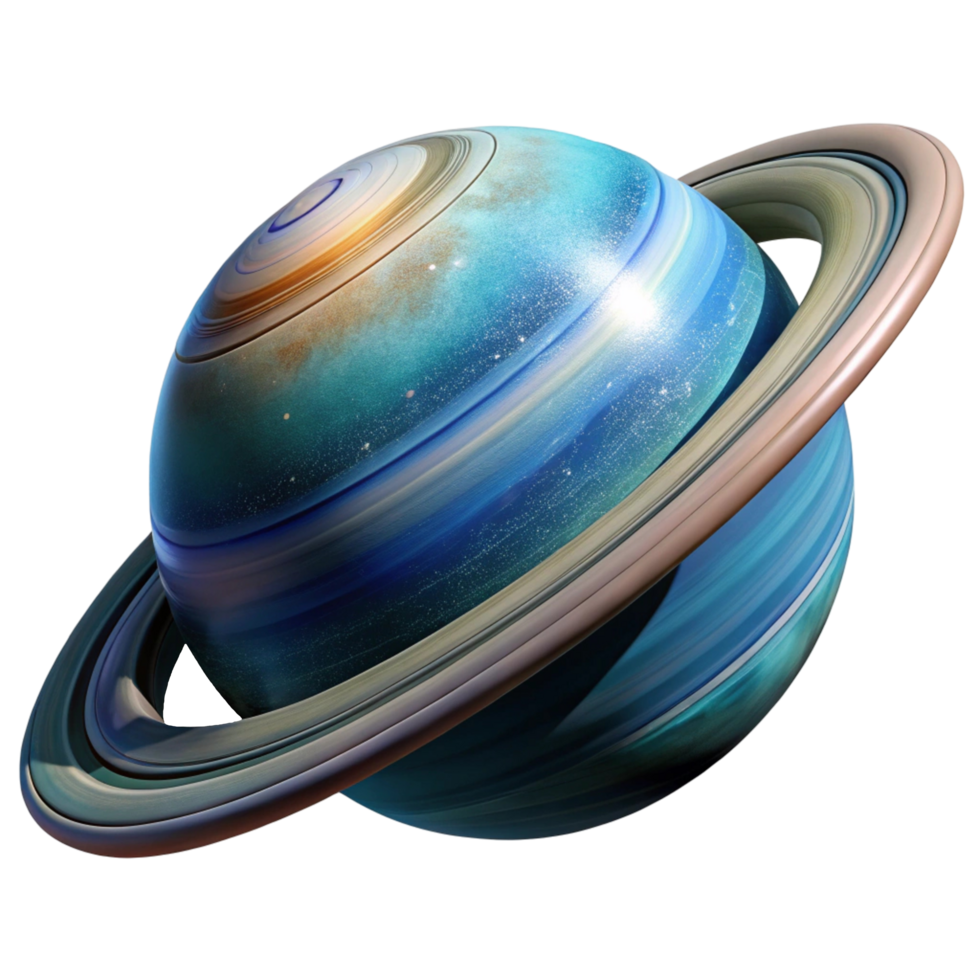
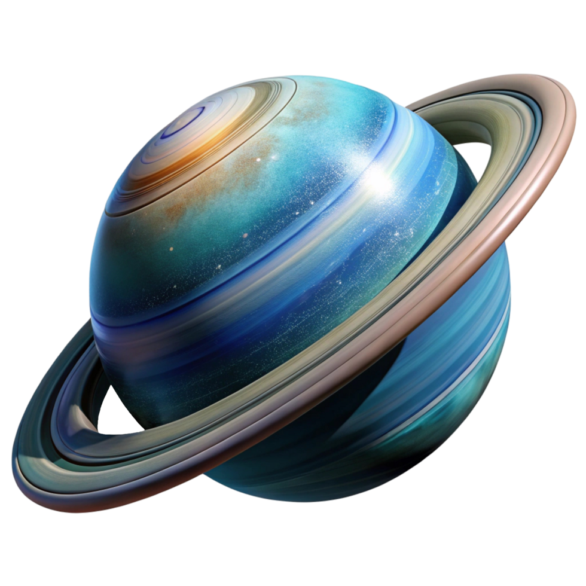

The universe is a vast expanse of wonder and mystery, stretching beyond the limits of human comprehension. Each star in the night sky represents a distant sun, potentially hosting worlds of its own. The cosmos holds secrets that have fascinated humanity for millennia, driving us to explore the unknown and push the boundaries of our understanding.
Nebulae, those cosmic clouds of gas and dust, serve as stellar nurseries where new stars are born. These magnificent structures paint the universe with vibrant colors, creating some of the most beautiful sights in the cosmos. Through telescopes and space missions, we continue to unravel the mysteries of these celestial phenomena, learning more about the origins of stars and planetary systems.
Planets orbit their parent stars in delicate dances of gravity, each following precise paths through space. Some worlds may harbor conditions suitable for life, while others present extreme environments that challenge our understanding of what's possible. The search for exoplanets has revealed thousands of worlds beyond our solar system, expanding our perspective on the diversity of planetary systems.
As we gaze into the depths of space, we are looking back in time. The light from distant galaxies has traveled for billions of years to reach us, carrying information about the early universe. This cosmic time machine allows astronomers to study the evolution of the cosmos, from the first moments after the Big Bang to the present day, revealing the grand narrative of cosmic history.
 
